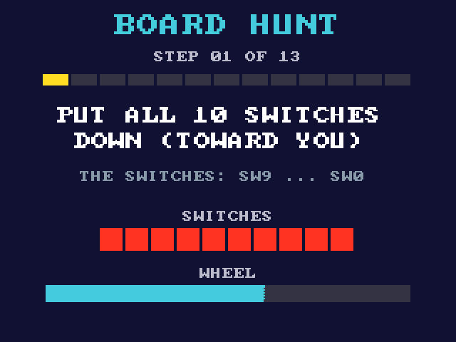

What is an FPGA?
Your board's big black chip is an FPGA. Today you find out what's inside it, why it's so different from the processor in your phone, and you meet every switch, button and knob you will use in this course.
By the end of this lesson you can
- explain the difference between a CPU and an FPGA,
- explain what a LUT is (the FPGA's basic building block),
- find every input on the board and the shield.
No circuit design today: that starts in lesson 2. About 45 minutes.
Two ways to make a chip do a job
A CPU follows a recipe
A processor (CPU) reads instructions from memory and does them one after another, very fast. To change what it does, you change the list of instructions: the software. Your phone and laptop work like this.
An FPGA becomes the circuit
An FPGA has no list of instructions. You describe a circuit, and the chip wires itself into that circuit. Every part of it works at the same time, all the time.
Field-Programmable Gate Array
- Gate Array: the chip is a big grid (an array) of small logic blocks that can act like logic gates.
- Programmable: what each block does, and how the blocks are wired to each other, is set by a file you load.
- Field: you do it yourself, at your desk ("in the field"), not in a chip factory.
What's inside an FPGA
- Logic elements: tens of thousands of small blocks. Each one can be any small piece of logic. This is where your circuits live.
- Wiring (routing): switchable connections between all the blocks.
- I/O pins: around the edge, connected to the switches, LEDs, screen and so on.
- Block memory: ready-made memory, for pictures, text and later your CPU's RAM.
- Multipliers: fast ready-made math.
- PLL: makes new clock speeds from the board's clock.
A logic element = a LUT + a flip-flop
The heart of every logic element is a LUT, a Look-Up Table. A LUT is a tiny memory that holds a truth table: for every combination of inputs, the output you want.
The inputs pick a row. The bit stored in that row comes out. That's all.
So one LUT can be any gate: store the AND truth table and it's an AND gate. Store the XOR table and the same LUT is an XOR gate. Our chip's LUTs have 4 inputs, so each can be any function of 4 signals.
Program a LUT yourself
Click the stored bits to change what the LUT does. Click a and b to change the inputs. Can you make an OR gate? An XOR gate? A gate that ignores a and just copies b?
| a | b | stored bit (click) |
|---|---|---|
| 0 | 0 | |
| 0 | 1 | |
| 1 | 0 | |
| 1 | 1 |
The highlighted row is the one the inputs pick right now. Quartus does exactly this for you: it fills thousands of LUTs with the right bits for your circuit.
Your chip: Intel MAX 10 (10M50)
How much of it did we use?
The hunt you'll play in a minute draws text on the screen, reads 20 inputs, beeps, and talks to the computer, and it fills only a tenth of the chip. A complete computer (your CPU at the end of Path A) fits easily.
Quartus prints these numbers after every build; the chat shows them to you.
From your Verilog to a working chip
You've seen this already
In lesson 0, the chat ran these steps when it built the READY test. From lesson 2 on, you change the Verilog going in.
The DE10-Lite: what's on it
Click a part to read what it does and when you'll use it.
The shield: screen, game pad, wheel, buzzer
Click a part to read what it does.
The board hunt
Time to meet the board for real. The chat loads a game onto it: the screen gives you 13 challenges, one at a time. Flip this switch, press that button, turn the wheel...
- Tell the chat you're ready. It loads the hunt.
- Follow the screen. Hold each answer for a moment: a quick touch doesn't count.
- The board beeps and moves on when it sees you got it. The red number digits show your step: St 05.
- Stuck? Ask the chat for a hint.

Three questions, in the chat
The chat asks you these, one at a time. Answer in your own words: there's no trick, and a hint is always OK.
- What is the difference between a CPU and an FPGA?
- What is a LUT, and how can the same LUT be an AND gate or an XOR gate?
- Why is your design gone when the board loses power, and what does that mean for you?
Not sure? Go back to slides 2, 5 and 8.
The end of lesson 1
What you learned
- A CPU runs instructions one after another. An FPGA becomes the circuit.
- A LUT is a tiny memory holding a truth table, so it can be any gate.
- The design lives in memory that needs power, so you load it again after power-up.
Next: lesson 2, your first simulation
Ask the chat what now? and it takes you there.